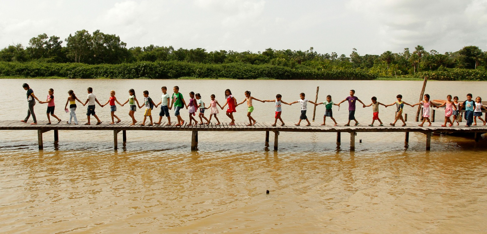

Projetos de Impacto
Conheça nossas iniciativas que transformam comunidades através da robótica

Robótica nas Ilhas
Levamos a robótica para as comunidades ribeirinhas do Pará, organizando campeonatos de futebol de robô nas ilhas e capacitando jovens locais.
Objetivos:
- Democratizar acesso à educação tecnológica
- Promover inclusão digital nas comunidades ribeirinhas
- Organizar competições de futebol de robô
- Capacitar educadores locais
Impacto:
200+ jovens capacitados
15 ilhas visitadas
8 campeonatos realizados
Concluído

Paratech Descomplica
Plataforma educacional nas redes sociais onde ensinamos robótica de forma simples e acessível, democratizando o conhecimento tecnológico.
Objetivos:
- Ensinar robótica de forma didática e divertida
- Criar conteúdo educacional gratuito
- Inspirar jovens para carreiras STEM
- Desmistificar a tecnologia
Impacto:
50k+ seguidores
100+ vídeos educativos
1M+ visualizações
Concluído

Paratech na COP30
Projeto inovador para a COP30 em Belém, desenvolvendo soluções robóticas sustentáveis para monitoramento ambiental da Amazônia.
Objetivos:
- Desenvolver robôs para monitoramento ambiental
- Criar tecnologias sustentáveis para a Amazônia
- Representar a juventude brasileira na COP30
- Promover educação ambiental através da robótica
Tecnologias:
Drones de monitoramento
Sensores de qualidade da água
Robôs de reflorestamento
Sistema IoT sustentável
Em Desenvolvimento